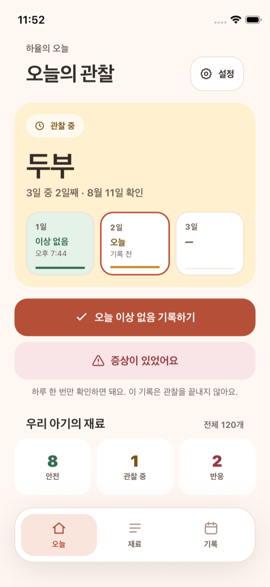
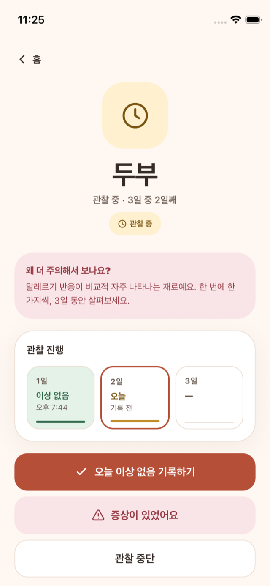

iPhone 앱 · 개인 프로젝트App Store
Allergy Tracker
팀 프로젝트 Mammacare를 바탕으로 혼자 만든 iPhone 앱입니다. 아기의 음식과 반응을 그때그때 쉽게 기록하는 데 집중해 식단 추천 등 여러 기능을 덜어냈고, 로그인 없이 바로 기록할 수 있게 만들었습니다.
- React Native
- Expo
- TypeScript
- SQLite
- 120종 이유식 재료
- 43종 고위험 표시 재료
- v3.0.0 App Store 출시
관찰 시작한 번에 하나
매일 기록같은 날 한 번
관찰 종료조건부 갱신
상태 계산기록에서 계산
- 관찰 시작
관찰 중인 재료가 있으면 새 관찰을 시작할 수 없습니다. 이 검사는 저장과 같은 트랜잭션 안에서 합니다.
- 매일 기록
같은 날 기록이 이미 있으면 새로 만들지 않고 있던 기록을 돌려줍니다.
- 관찰 종료
아직 끝나지 않은 관찰만 종료되도록 조건을 붙여 갱신합니다. 그사이 상태가 바뀌었으면 오류로 알립니다.
- 상태 계산
재료의 상태를 따로 저장하지 않고 관찰 기록에서 매번 계산합니다. 알림도 저장된 기록을 기준으로 다시 만듭니다.
계정과 서버 동기화 없이 만들면?
재료 상태는 기록에서 계산하고 관찰 규칙은 코드로 검사합니다. 서버 계정과 동기화를 두지 않아 기록은 기기 안에만 저장됩니다.


의료적 진단이나 알레르기 안전 보장이 아닌 기록 도구입니다.